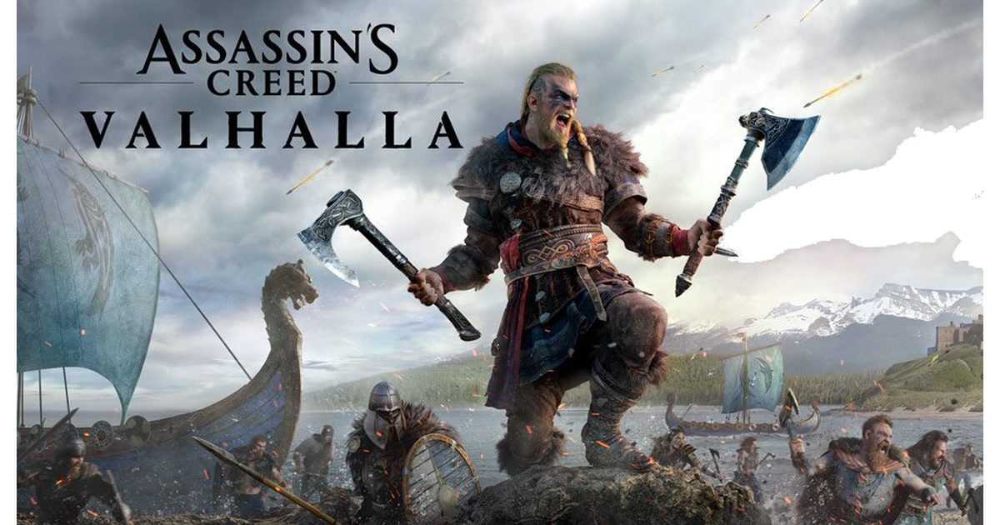

2026-11-10 · 单机深读

今天是《刺客信条：英灵殿》发售六周年（2020 年 11 月 10 日）。而就在五天前， 育碧突然给这款早就被写进「已完结」名单的游戏推了 1.8.0「The Most Requested Update」： 全平台免费，PS5 约 5.26 GB（Xbox Series X|S 最大 15.02 GB），核心内容一句话—— 玩家喊了六年的 New Game+，终于来了。官方顺带披露：英灵殿玩家总数已破 4000 万。
先把时间线摆正：1.7.0 叫「The Last Chapter（最后一章）」，官方的意思很明确——内容线到此为止。 四年之后突然回魂推一个免费大补丁，还起名叫「最受期待的更新」， 这不是良心发现，是一次精确的算账。这篇文章要做的是把账拆开看： 补丁里有什么是真的给玩家的，什么是给育碧自己的。
New Game+ 对育碧开放世界不是什么新技术，英灵殿初版没有它的原因，官方当年给过说法： 结算系统与继承逻辑在「体量过于庞大」的地图上做不动。六年后的补丁证明了这个说法的诚实程度—— 东西还是做出来了，只是做了六年。这次的入口设计有个细节值得注意： 解锁条件不是真结局，而是汉姆顿郡的「圣日（Holy Day）」任务。 育碧在公告里解释得很坦白：游戏太大，让你跑到真结局再开二周目太残忍，所以提前放行。 这是一个「承认自家游戏体量劝退」的道歉式设计，罕见地诚实。
NG+ 真正的新东西是资源重构。二周目里再摸到重复装备或知识之书， 不再是库存垃圾，而是换成新资源秘银；秘银也可以直接在尼福尔海姆、 特长挑战和沿河劫掠商店买——相当于给不想重复推图的终局玩家留了第二条路。 同理，财富宝箱里的碳块、镍块、钨块换成铂金块——这个材料原本是 《末日曙光》DLC 专属，现在免费玩家也能拿到，意味着没有 DLC 也能把装备升到神圣品质。 这是补丁里最「实」的一条：它实质性降低了一个六年老游戏的付费墙。
配套的还有三条：神圣装备升级上限从 13 级提到 27 级（每级吃秘银）； 符文工坊新增 300 多枚可镌刻符文，DLC 与 Helix 商店的特效被搬进了游戏本体， greater→superior 升阶同样要秘银，甚至可以把已拥有的套装花 450 银币直接刻成符文； 家园新增「仓库」建筑收库存。另有一个可选的「扩展成长体系」开关： 装备升级与符文各 +1 战力、每 5 点技能点也给战力——这是给数值党的精细刻度盘，普通玩家可以无视。
把三个背景叠在一起，答案就浮出来了。其一，PS5 Pro 的生命周期： 1.8.0 给 Pro 上了 PSSR 2——索尼 AI 超分的新一代实现，官方称画质模式下默认 60 帧、 4K 锐度明显提升，另给 PS5/Pro 加了 30 帧省电模式。育碧工程工作室经理 Priscilla Nguyen 的说法很直白： 新版 PSSR 更高效、更容易接进引擎。一款老作成了 PSSR 2 的公开演示品。 其二，Animus Hub：本次更新接入了育碧的跨作品进度同步中枢， 从英灵殿到《影》的存档与奖励链路被焊上——补丁的另一重身份是新作的引水渠。 其三，4000 万玩家的存量盘：给老玩家一个「回去看看」的理由， 比给新玩家打一次广告便宜得多。
单机长青游戏的「复活补丁」这两年正在变成一门显学。《巫师 3》次世代版、 《赛博朋克 2077》2.x 系列都是同一公式：老作免费大更新 + 新硬件特性背书 + 新作预热联动。 英灵殿 1.8.0 的特别之处在于它没有新剧情、没有新地图，全部内容围绕「可重复游玩」展开—— NG+ 难度逐轮递增、两个新成就（Ivaldi's Heir 满级神圣装备 / Circle of Renewal 通关 NG+）全挂在终局循环上。 这意味着育碧不是在做「临终告别」，更像是在测试一款 2020 年老作还有多少长线价值。 对比之下，《赛博朋克 2077》路线赌的是口碑翻盘，英灵殿路线赌的是资产复用。
我们用存档实测了一遍最优回坑路径：先别开 NG+，先回旧存档把财富宝箱里的碳/镍/钨再摸一轮—— 这些库存矿石在旧存档里还是旧材料，进二周目才会换铂金；然后把双持流打两场对比手感 （本作重做了双持与全系武器的伤害倍率和动画速度，长斧配盾新增 1.16 倍基础伤害系数）， 再去 Animus Store 的 Exclusive Offers 手动领《影》联动的奈绪江刺客大师服装—— 这个福利不会自动发放，漏领的人不少。全部做完再开二周目，你的起点比直接 NG+ 高一整个档位。
我们的观点：1.8.0 的价值不在内容量，而在姿态——一个工作室愿意回头 给六年前欠玩家的功能还账，这在今天的行业里值得单独记一分。秘银/铂金经济拆掉了 一部分 DLC 付费墙，PSSR 2 与 60 帧让 Pro 玩家拿到真实收益，NG+ 的逐轮增难度给了 终局玩家一个可持续的循环。扣分项也很清楚：零新内容、补丁最大 15 GB、 「最受期待」的标题反过来提醒所有人这个功能迟到了六年。 它是给 4000 万老玩家的回程票，不是给新玩家的上车理由——但回程票本身，已经足够体面。
六年前的功能、六年后的道歉、四千万张回程票——英灵殿用 1.8.0 证明了 「最后一章」从来挡不住真正被需要的东西。趁周年促销价还在（PS 商店 -72%）， 这可能是回坑成本最低的一个月。